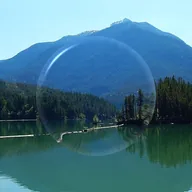

Стекло

Превращает форму слоя в огранённое стекло, преломляющее слои под ним, с бликом по краю.
Настройки
| Настройка | Тип | Диапазон | По умолчанию |
|---|---|---|---|
| Фаска | Число | от 0 px до 300 px | 24 px |
| Преломление | Число | от -300 px до 300 px | 30 px |
| Угол света | Угол | от -3600° до 3600° | 135° |
| Блик | Число | от 0% до 100% | 60% |
| Цвет | Цвет | – | #BFE6FF |
| Оттенок | Число | от 0% до 100% | 15% |